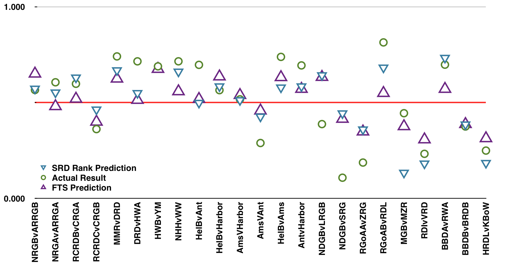
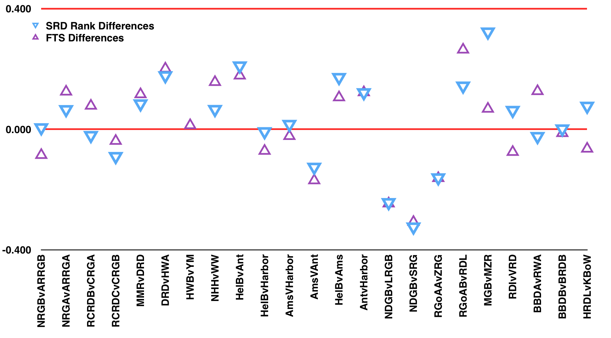

Revisiting the weekend: how did we do?
On Friday, we published a list (link) of all of the bouts we and Flat Track Stats knew about this weekend in Europe. We might keep doing this, regularly or semiregularly - if you want us to mention you, we'll probably find you if put yourselves in FTS!
What we also did for each bout was to say what our ranking scheme, SRD Rank, and the Flat Track Stats ranking scheme predicted for each game. Now that they're all over, how did we do?
Well, let's start with a graph (bouts are listed in the order we mentioned them in the original article).

Clicking the image makes it bigger.
Each vertical is a bout, and the values are the "share of the score" which the first team (usually the host) was expected to get. The horizontal line is at 50% - a draw, where both teams have the same share of the score - and points above are a win for the first team, points below are a loss.
Each bout has three points: the circle is the actual result, the downward triangle is FTS's prediction, and the upward triangle is SRD Rank's prediction1. There is one bout (Hot Wheel B v York Minxters) where SRD Rank could not predict; there are three bouts (the Habour Girls bouts in the KickAss Cup) where FTS could not predict - those are missing the appropriate symbols [update: FTS could predict these, but only in the non-default Europe ranking, we've added their predictions to the graph].
As you can see, neither FTS nor SRD Rank are perfect - that's pretty much expected when trying to predict any sport, as performance on the day is never 100% predictable, and even includes random elements. However, for the most part, both ranking schemes did okay - each only predicted one win incorrectly (and in both cases, said it would be tight). However: SRD Rank, whilst not uniformly beating FTS (our predictions about Munster v Bremen were way off) for the most part did either as well as, or better than, FTS's Elo ranking.
(In particular, we're pleased to see that Middlesbrough Milk Rollers seem to be as good as we think they are - which is rather better than FTS or WFTDA thought...)
This is perhaps easier to visualise with a different graph:

Here, we've plotted the difference between the real result and FTS(+) and SRD Rank(x). The red line in the centre is a perfect prediction. We think it's pretty clear that SRD Rank is generally the winner here - and remember, our ratings use only data from 1 October and earlier at present, whilst FTS has 2 weeks of more recent results to work with. [Update: adding the Harbor Girls bouts from FTS above makes things more even, closer to a wash.]
[For statisticians: the rms error on SRD Rank's predictions is 0.147 while FTS's is 0.145 . The bulk of our error comes from two very incorrect predictions - most notably the Bremen/Munster result - setting both of them to the rms error as placeholders brings our error down to 0.120, whilst doing the same for FTS's two worst results brings them to 0.125, as their errors are more uniformly distributed.]
1For those wanting to use SRD Rank for prediction - the current table's ratings are approximately log(score ratio)/10.32. So, for a pair of teams, A and B, the expected score ratio R= A/B is exp( (A-B)*10.32). The score share can be computed from this easily as R/(R+1).